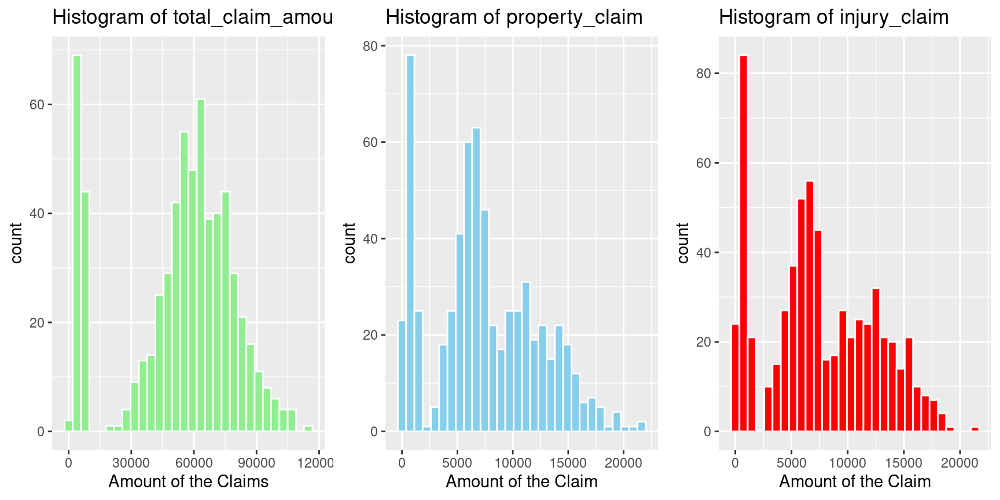
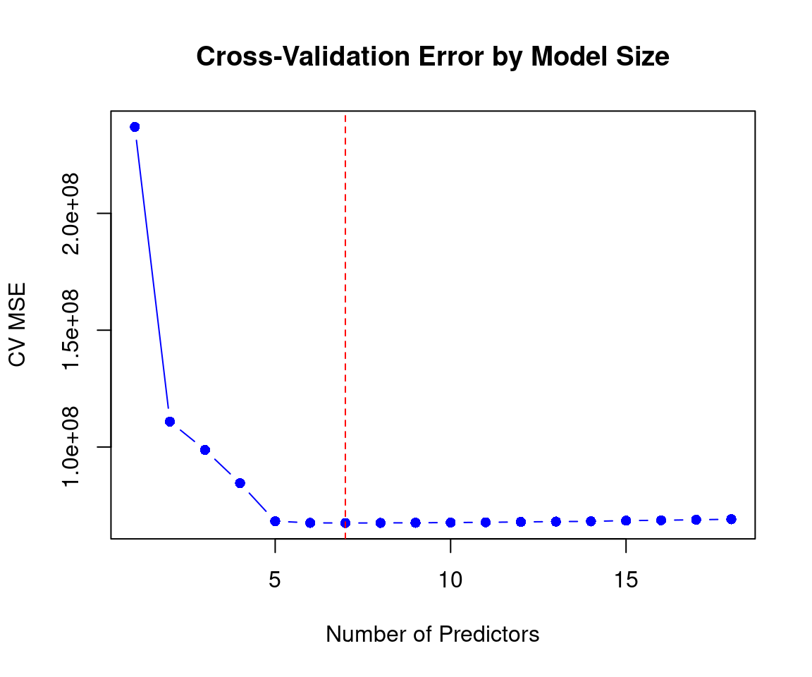

This project investigates the factors that influence the total insurance claim amount using a dataset of over 600 real-world auto insurance claims. We explore how both quantitative variables—such as age, property damage value, and months as a customer—and categorical variables—such as education level, incident type, and incident severity—are related to the claim amount. Our goal is to identify meaningful patterns and potential predictors of high insurance claims, using exploratory data analysis and visualization techniques. This analysis may provide insights into claim behavior that could support better risk assessment and fraud detection strategies.
1. Provide any numerical summaries that are relevant to your research question.
print(summary(fraud_new$total_claim_amount))
Min. 1st Qu. Median Mean 3rd Qu. Max.
100 41925 58500 53137 70848 114920
class(fraud_new$months_as_customer)
[1] "integer"
summary(fraud_new$months_as_customer)
Min. 1st Qu. Median Mean 3rd Qu. Max.
1.0 115.0 203.0 204.5 277.2 479.0
count(fraud_new, edu_level)
edu_level n
1 Advanced Degree 365
2 Associate 90
3 College 82
4 High School 103
#ggpairs(fraud_new)
2. Provide any visualizations that are relevant to your research question
Visualizaiton of the outcome variable
# total_claim visualizationp1 <-ggplot(fraud_new, aes(x = total_claim_amount)) +geom_histogram(fill ="lightgreen", bins =30, color ="white") +ggtitle("Histogram of total_claim_amount") +xlab("Amount of the Claims")p2 <-ggplot(fraud_new, aes(x = property_claim)) +geom_histogram(fill ="skyblue", bins =30, color ="white") +ggtitle("Histogram of property_claim") +xlab("Amount of the Claim")p3 <-ggplot(fraud_new, aes(x = injury_claim)) +geom_histogram(fill ="red", bins =30, color ="white") +ggtitle("Histogram of injury_claim") +xlab("Amount of the Claim")grid.arrange(p1, p2, p3, ncol =3)

Visualizaiton of a quantitative predictor
property_claim_hist <-hist(fraud_new$property_claim,main ="Histogram of property_claim",xlab ="amount of the claim",col ="skyblue",breaks =30,border ="white")
library(forcats)fraud_new <- fraud_new %>%mutate(property_damage =as.character(property_damage)) %>%# transfer into characteresmutate(property_damage =na_if(property_damage, "?")) %>%# delete "?"mutate(property_damage =as.factor(property_damage)) %>%# transfer back to factorsmutate(property_damage =fct_drop(property_damage)) # remove the factor that haven't been usedlevels(fraud_new$property_damage)
plot(cv_errors$model, cv_errors$cverr, type ="b", pch =16, col ="blue",xlab ="Number of Predictors", ylab ="CV MSE",main ="Cross-Validation Error by Model Size")abline(v = g, col ="red", lty =2)

decode_selected_vars <-sapply(selected_vars, function(var) {if (grepl("1|2|3$", var)) { # Match the variable name base_var <-sub("\\d+$", "", var) # extract the original variable name without the number contrast_num <-as.numeric(sub(".*(\\d+)$", "\\1", var)) # extract the number levels <-levels(fraud_new[[base_var]])paste0(base_var, " (Contrast: ", levels[contrast_num], " vs others)") } else { var # keep the continous variables }})print(decode_selected_vars)
months_as_customer
"months_as_customer"
age
"age"
vehicles_involved
"vehicles_involved"
bodily_injuries
"bodily_injuries"
injury_claim
"injury_claim"
property_claim
"property_claim"
insured_sex1
"insured_sex (Contrast: FEMALE vs others)"
property_damage1
"property_damage (Contrast: NO vs others)"
edu_level1
"edu_level (Contrast: Advanced Degree vs others)"
edu_level2
"edu_level (Contrast: Associate vs others)"
edu_level3
"edu_level (Contrast: College vs others)"
incident_type1
"incident_type (Contrast: Multi-vehicle Collision vs others)"
incident_type2
"incident_type (Contrast: Parked Car vs others)"
incident_type3
"incident_type (Contrast: Single Vehicle Collision vs others)"
incident_severity1
"incident_severity (Contrast: Major Damage vs others)"
incident_severity2
"incident_severity (Contrast: Minor Damage vs others)"
incident_severity3
"incident_severity (Contrast: Total Loss vs others)"
fraud_reported1
"fraud_reported (Contrast: N vs others)"
Cross Validation with 2 models
Write a brief introduction to cross validation which includes relevant mathematical notation.
Cross Validation (CV) is used for the purpose of (1) selection of tuning parameters, (2) variable selections, and (3) assessing the quality of model fit to avoid issues like overfitting.
In \(k\)-fold cross-validation, the dataset is randomly partitioned into \(k\) disjoint subsets (folds) of roughly equal size. For each fold \(j = 1, 2, \dots, k\), the model is trained on the data excluding the \(j\)-th fold, and the prediction error is computed on the held-out fold. The estimated MSE is predicted by:
where \(k\) is the number of folds you select. For each model, CV helps with estimating and calculating \(MSE_{\text{test}}\). By using CV, we aim to choose models that balance underfitting and overfitting to improve predictive accuracy.
What linear models are you considering based on your research question? Pick at least two models to compare.
We gathered the linear models based on the backward variable selection results, so there are a total of () model candidates. Here is the list of candidates models we are comparing using CV:
model A: total_claim_amount ~ age + vehicles_involved + injury_claim model B (full model): total_claim_amount ~ months_as_customer + age + vehicles_involved + bodily_injuries + injury_claim + property_claim + insured_sex + property_damage + edu_level + incident_type + incident_severity + fraud_reported.
Implement k-fold cross validation for k = 10.
set.seed(123)num_folds <-10folds <-createFolds(fraud_new$total_claim_amount, k = num_folds)#fraud_new$property_damage <- factor(fraud_new$property_damage, levels = c("Yes", "No"))#levels_pd <- levels(fraud_new$property_damage)factor_vars <-names(Filter(is.factor, fraud_new))factor_levels <-lapply(fraud_new[factor_vars], levels)mse_results <-data.frame(fold =1:num_folds,model_A_mse =NA,model_B_mse =NA)for (i in1:num_folds) { train_data <- fraud_new[-folds[[i]], ] test_data <- fraud_new[folds[[i]], ]for (v in factor_vars) { train_data[[v]] <-factor(train_data[[v]], levels = factor_levels[[v]]) test_data[[v]] <-factor(test_data[[v]], levels = factor_levels[[v]]) }# mod A: simple model mod_A <-lm(total_claim_amount ~ age + vehicles_involved + injury_claim, data = train_data) pred_A <-predict(mod_A, newdata = test_data) mse_results$model_A_mse[i] <-mean((test_data$total_claim_amount - pred_A)^2)# mod B: complete model mod_B <-lm(total_claim_amount ~ ., data = train_data) pred_B <-predict(mod_B, newdata = test_data) mse_results$model_B_mse[i] <-mean((test_data$total_claim_amount - pred_B)^2)}# --- In-sample residuals on full dataset ---# Model Amod_A_full <-lm(total_claim_amount ~ age + vehicles_involved + injury_claim, data = fraud_new)resid_A <-resid(mod_A_full)# Model Bmod_B_full <-lm(total_claim_amount ~ ., data = fraud_new)resid_B <-resid(mod_B_full)summary_table <-data.frame(Model =c("Model A", "Model B"),CV_MSE_Mean =c(mean(mse_results$model_A_mse), mean(mse_results$model_B_mse)),CV_MSE_SD =c(sd(mse_results$model_A_mse), sd(mse_results$model_B_mse)),InSample_MSE =c(mean(resid(lm(total_claim_amount ~ age + vehicles_involved + injury_claim, data = fraud_new))^2),mean(resid(lm(total_claim_amount ~ ., data = fraud_new))^2) ),InSample_SD =c(sd(resid_A^2), sd(resid_B^2)))summary_table
Model CV_MSE_Mean CV_MSE_SD InSample_MSE InSample_SD
1 Model A 233767567 40917704 229954703 322843034
2 Model B 69081551 11571068 65065375 107280574
k = 639 and 5
##CV using different value of k:##k = n=1set.seed(123)num_folds <-639folds <-createFolds(fraud_new$total_claim_amount, k = num_folds)#fraud_new$property_damage <- factor(fraud_new$property_damage, levels = c("Yes", "No"))#levels_pd <- levels(fraud_new$property_damage)factor_vars <-names(Filter(is.factor, fraud_new))factor_levels <-lapply(fraud_new[factor_vars], levels)mse_results <-data.frame(fold =1:num_folds,model_A_mse =NA,model_B_mse =NA)for (i in1:num_folds) { train_data <- fraud_new[-folds[[i]], ] test_data <- fraud_new[folds[[i]], ]for (v in factor_vars) { train_data[[v]] <-factor(train_data[[v]], levels = factor_levels[[v]]) test_data[[v]] <-factor(test_data[[v]], levels = factor_levels[[v]]) }# mod A: simple model mod_A <-lm(total_claim_amount ~ age + vehicles_involved + injury_claim, data = train_data) pred_A <-predict(mod_A, newdata = test_data) mse_results$model_A_mse[i] <-mean((test_data$total_claim_amount - pred_A)^2)# mod B: complete model mod_B <-lm(total_claim_amount ~ ., data = train_data) pred_B <-predict(mod_B, newdata = test_data) mse_results$model_B_mse[i] <-mean((test_data$total_claim_amount - pred_B)^2)}# --- In-sample residuals on full dataset ---# Model Amod_A_full <-lm(total_claim_amount ~ age + vehicles_involved + injury_claim, data = fraud_new)resid_A <-resid(mod_A_full)# Model Bmod_B_full <-lm(total_claim_amount ~ ., data = fraud_new)resid_B <-resid(mod_B_full)summary_table <-data.frame(Model =c("Model A", "Model B"),CV_MSE_Mean =c(mean(mse_results$model_A_mse), mean(mse_results$model_B_mse)),CV_MSE_SD =c(sd(mse_results$model_A_mse), sd(mse_results$model_B_mse)),InSample_MSE =c(mean(resid(lm(total_claim_amount ~ age + vehicles_involved + injury_claim, data = fraud_new))^2),mean(resid(lm(total_claim_amount ~ ., data = fraud_new))^2) ),InSample_SD =c(sd(resid_A^2), sd(resid_B^2)))summary_table
Model CV_MSE_Mean CV_MSE_SD InSample_MSE InSample_SD
1 Model A 232967258 327286923 229954703 322843034
2 Model B 68867218 113618315 65065375 107280574
## k = 5set.seed(123)num_folds <-5folds <-createFolds(fraud_new$total_claim_amount, k = num_folds)#fraud_new$property_damage <- factor(fraud_new$property_damage, levels = c("Yes", "No"))#levels_pd <- levels(fraud_new$property_damage)factor_vars <-names(Filter(is.factor, fraud_new))factor_levels <-lapply(fraud_new[factor_vars], levels)mse_results <-data.frame(fold =1:num_folds,model_A_mse =NA,model_B_mse =NA)for (i in1:num_folds) { train_data <- fraud_new[-folds[[i]], ] test_data <- fraud_new[folds[[i]], ]for (v in factor_vars) { train_data[[v]] <-factor(train_data[[v]], levels = factor_levels[[v]]) test_data[[v]] <-factor(test_data[[v]], levels = factor_levels[[v]]) }# mod A: simple model mod_A <-lm(total_claim_amount ~ age + vehicles_involved + injury_claim, data = train_data) pred_A <-predict(mod_A, newdata = test_data) mse_results$model_A_mse[i] <-mean((test_data$total_claim_amount - pred_A)^2)# mod B: complete model mod_B <-lm(total_claim_amount ~ ., data = train_data) pred_B <-predict(mod_B, newdata = test_data) mse_results$model_B_mse[i] <-mean((test_data$total_claim_amount - pred_B)^2)}# --- In-sample residuals on full dataset ---# Model Amod_A_full <-lm(total_claim_amount ~ age + vehicles_involved + injury_claim, data = fraud_new)resid_A <-resid(mod_A_full)# Model Bmod_B_full <-lm(total_claim_amount ~ ., data = fraud_new)resid_B <-resid(mod_B_full)summary_table <-data.frame(Model =c("Model A", "Model B"),CV_MSE_Mean =c(mean(mse_results$model_A_mse), mean(mse_results$model_B_mse)),CV_MSE_SD =c(sd(mse_results$model_A_mse), sd(mse_results$model_B_mse)),InSample_MSE =c(mean(resid(lm(total_claim_amount ~ age + vehicles_involved + injury_claim, data = fraud_new))^2),mean(resid(lm(total_claim_amount ~ ., data = fraud_new))^2) ),InSample_SD =c(sd(resid_A^2), sd(resid_B^2)))summary_table
Model CV_MSE_Mean CV_MSE_SD InSample_MSE InSample_SD
1 Model A 233223160 19807450 229954703 322843034
2 Model B 68274384 8752033 65065375 107280574